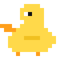

VirtualBuddyIt researches the web, knows where every one of your files is, edits them, and tells you what is eating your CPU. Free, offline, no API keys.
Every skill declares the phrasings it answers to. Your words get scored against all of them, and the best one wins. This box runs that same scoring in your browser, so the match below is real, not a script.
Results are samples. The matching is the real thing.
Search, scrape and research across several sites at once. Plain HTTP first because it is fast, and a real Chromium only when a page is JavaScript-only or wants clicking. No keys, no quota, nothing to sign up for.
to walk 48,787 files into a graph of folders and files. Ask it anything about your own machine afterwards.
Where that file went, what is eating your disk, what you touched today, what is in a folder without opening it.
Create folders, write and edit files, close a program that is hogging the CPU, keep your to-do list. It never touches Windows or Program Files, never overwrites without being asked, and deleting goes to the Recycle Bin.
Type it in the panel or press Talk. Speech recognition is offline too, so your voice never goes anywhere either.
Hashed word and character n-grams score your sentence against every skill. No model to download, no embedding server, no wait.
Manual mode shows you the match and its confidence first. Auto mode just runs it. Anything irreversible asks either way.
A local language model is optional. If Ollama is running with qwen3:4b, research and page summaries get written up properly. That model fits in about 2.6GB of VRAM, so a 4GB card is enough. Without it every skill still works, you just get the extracted text and the sources instead of a synthesis.
# Windows, macOS or Linux. Python 3.10+
git clone https://github.com/SahilSidhu7/VirtualBuddy
cd VirtualBuddy
pip install -r requirements.txt
python run.py
Your buddy appears in the corner of the screen. Click it to open the panel, drag it wherever you like, right click for the menu. Prefer a terminal? python run.py --cli.
~/.virtualbuddy, in formats you can open yourself.